UI Design • Pattern Library • Wireframes • UserFlows • User Testing
A cutting-edge Learning Management System (LMS) tailored for use by HR administrators and employees. This system empowers administrators to efficiently create and manage courses, monitor employee engagement, and generate detailed analytics. Simultaneously, employees have access to a diverse array of educational resources, enabling them to expand their knowledge across various subjects and enhance their professional development
When HR executives are surveyed on why they chose Continu over competitors, they consistently cite the "Excellent User Experience and Clean User Interface."
Leveraging my experience as a product designer, I established a structured design process to help us meet our deadlines efficiently. Before my arrival, the organization's design process was inconsistent, leading to difficulties in problem comprehension and coordination on potential solutions within the development team. My approach brought clarity and organization, enabling the team to align more effectively on project goals.
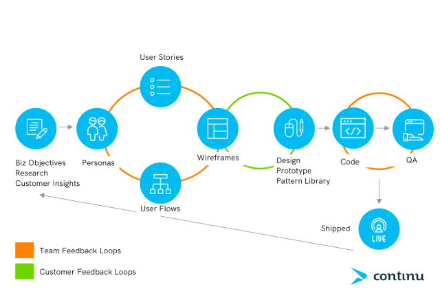New Design Process.
To facilitate better communication about the new product with the CEO and the development team, I began creating design user stories that included detailed flow diagrams. This approach enabled us to have quick, focused discussions, aligning everyone on the project objectives and ensuring that both design and development were in sync. As a result, we achieved a more cohesive understanding of what we were creating and developing.
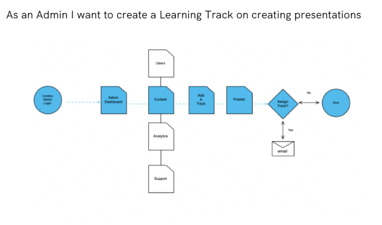A crucial aspect of my design process is utilizing conceptual thinking through sketching. I prioritize rapid ideation over more complex and time-consuming design techniques. For this project, I employed a series of 4-up sketches to explore and resolve complex design elements, enabling efficient iteration and innovation.
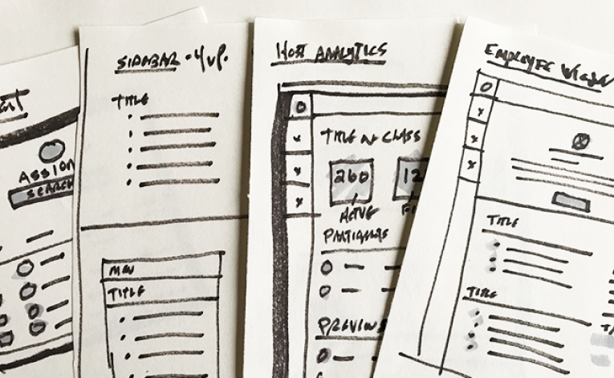Below are the UI designs for the Explore section, which features a masonry-style card layout displaying courses, events, videos, and other content within the platform. The design draws heavily on established UI patterns for card layouts, which enhance information hierarchy. Additionally, there are screens for the Learning Track and User Dashboard, enabling users to track their course progress.
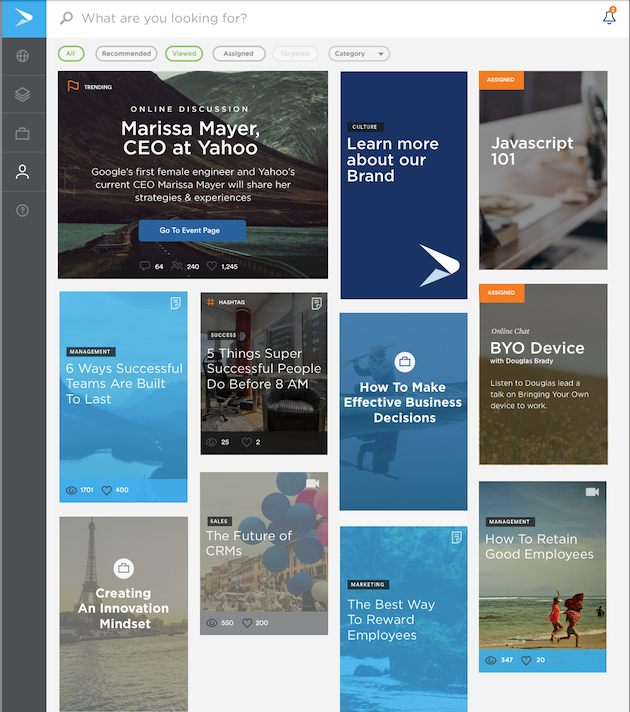Explore allows employees to choose from events, learning tracks, articles, videos and more.
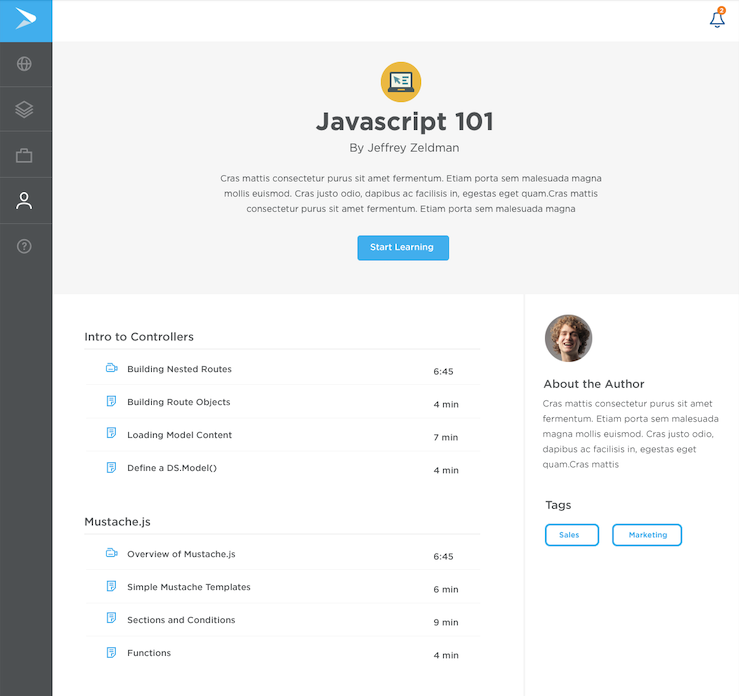This is the main screen of a Learning Track where progress is tracked and each course is broken out into Modules.
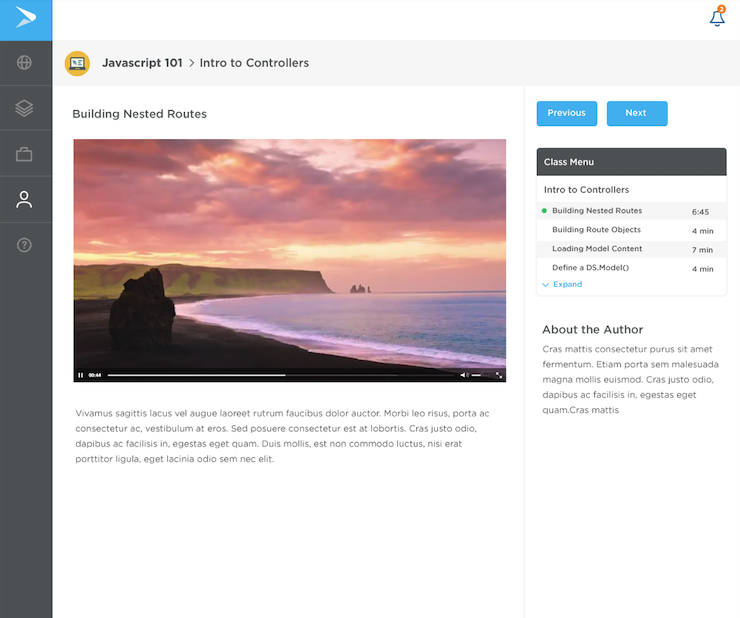Example of a video within the module. Your progress is tracked on the right-side menu.
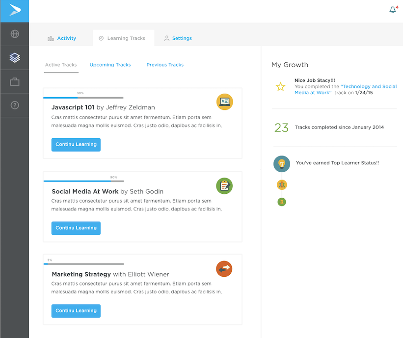User Dashboard with gamification. You can track your Learning Tracks and also your Growth as a learner over time. We had a custom badge system for your Learner Status over time.
A crucial aspect of my design process is utilizing conceptual thinking through sketching. I prioritize rapid ideation over more complex and time-consuming design techniques. For this project, I employed a series of 4-up sketches to explore and resolve complex design elements, enabling efficient iteration and innovation.
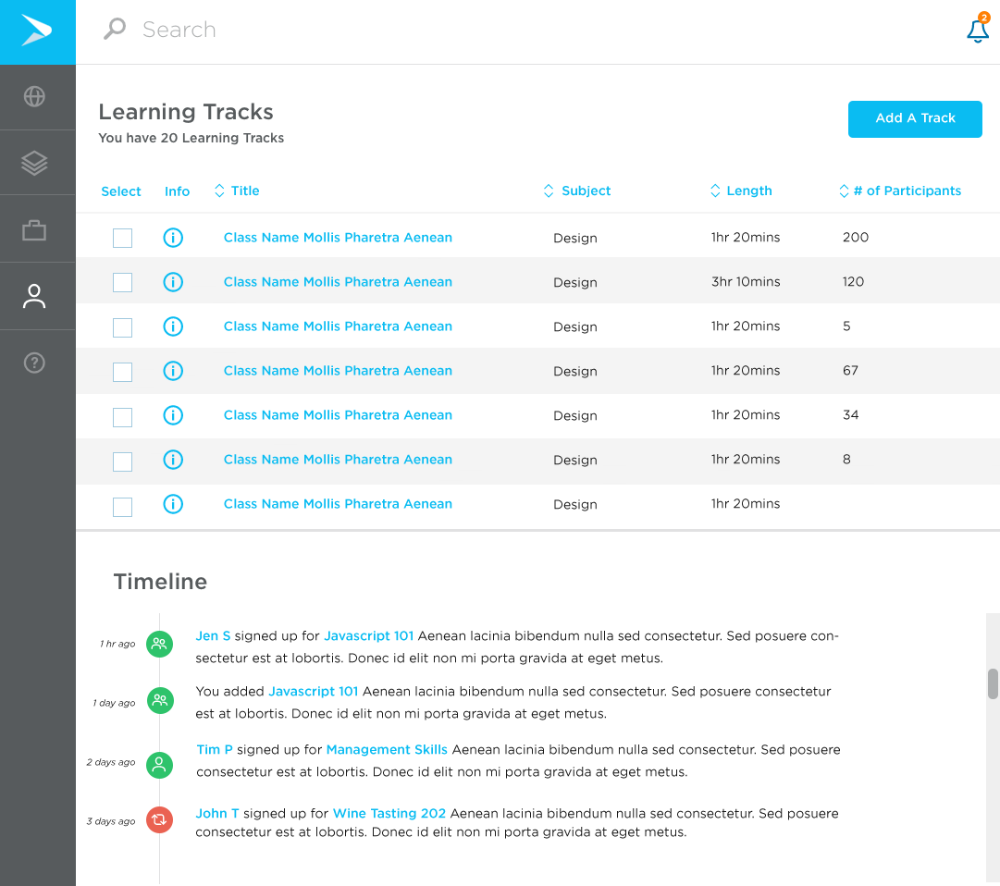An administrator view of all your learning tracks as well as emplyee engagement timeline.
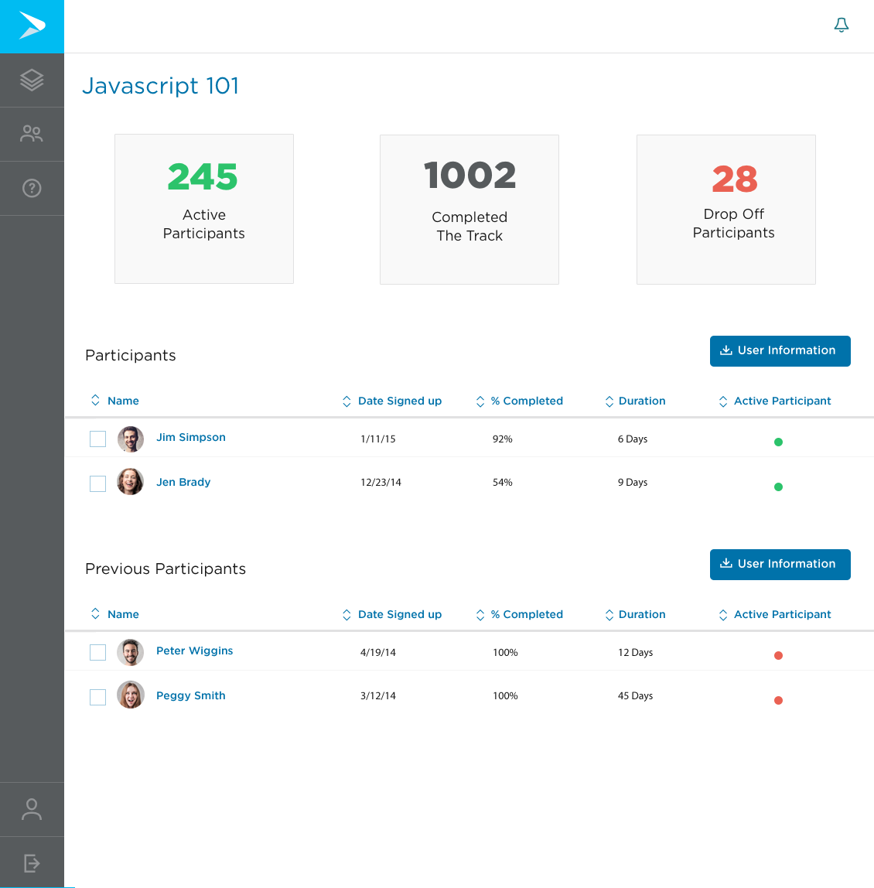This is the engagement viw of your learning track where you can keep tabs on participants and also download a full data set on the course including Drop Offs.
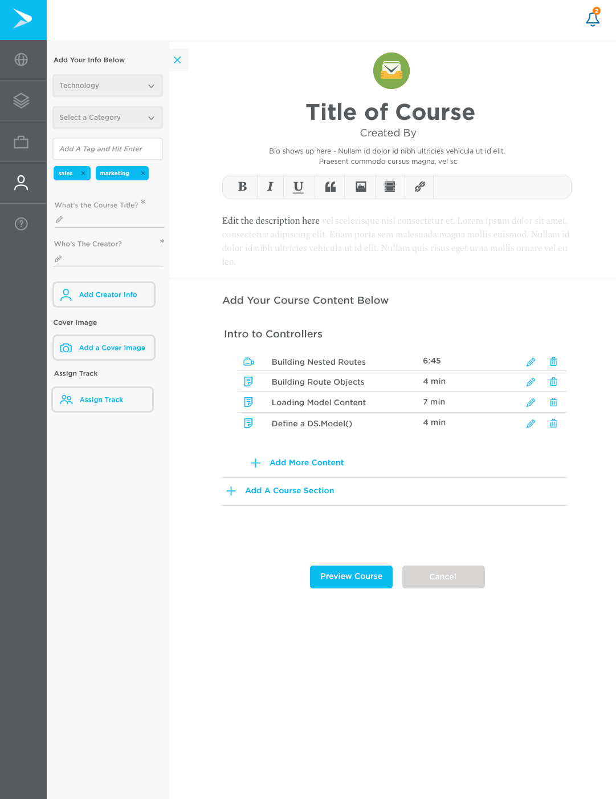This is the Content Management System within Continu.
After launching our MVP and introducing it to users, we began refining and building out additional features planned for the initial release of Learning Tracks. With Intercom already integrated for customer support, I leveraged the platform to conduct preference tests with our top users. Using Notable, I set up these tests and distributed them through Intercom, collecting valuable feedback. Given our customers' high level of engagement with the product, obtaining responses was relatively straightforward.
One challenge I identified while working with a small design and development team was the occurrence of inconsistencies during the transition from design to development. To address this, I led discussions with the team and spearheaded the creation of our first UI Pattern Library, ensuring greater consistency throughout the application. This library is still in use today.
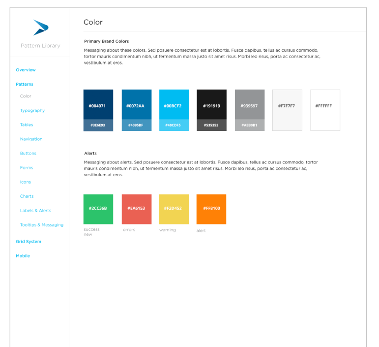Continu's first pattern library, still in use in the product almost 10 years later.
Learning Tracks was successfully adopted by major organizations, including Airbnb and Eventbrite. Both their learning departments and employees were highly impressed with the design and user experience of Continu.
During a conversation with Continu's CEO in the midst of the pandemic, he shared that the company was experiencing tremendous success. Leading companies like Slack, Lyft, Grubhub, GoPro, and Shopify have implemented Learning Tracks to streamline employee training, onboarding, and best practices for remote work.
I was pleased to learn that Continu continues to use the original UI/UX patterns I designed. The CEO also mentioned that when HR executives are surveyed on why they chose Continu over competitors, they consistently cite the "Excellent User Experience and Clean User Interface."